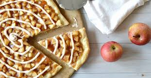

Apple Pie Pizza

Ingredients
- 3 cups apple pie filling
- 1/2 tsp cinnamon
- 1/2 tsp cloves
- 1 cups grated, mozzarella cheddar
Procedure
-
STEP 1
Spread out dough on pizza pan. In medium bowl, mix apple pie filling with cinnamon and cloves. Spread over pizza dough. Sprinkle grated cheese over top of pie filling. Bake in 375-385F oven for approx 30-45 minutes (depending on oven.) Continue to bake until the crust is crisp, and the cheese is bubbly and starting to brown on top. Let sit for about 5 minutes before serving to allow cheese to set up. This makes a GREAT get together snack for teenagers. Is cheap and very easy to make.